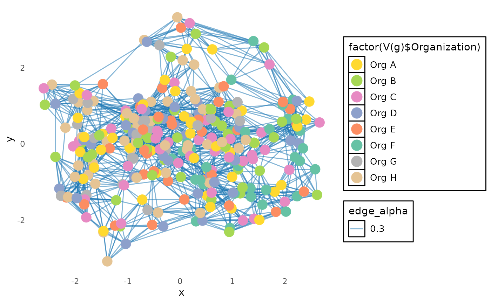

Plotting a Network Graph using network_p2p
2025-12-11
Source:vignettes/custom-network-p2p.Rmd
custom-network-p2p.RmdThis script demonstrates how to generate and visualize a network
graph using the network_p2p function. The function creates
an igraph object, which can be plotted to display
connections between individuals based on collaboration metrics.
Step 1: Load libraries and sample data
In this example, we will use the sample p2p_data_sim()
dataset from the vivainsights package. We will also use
dplyr for data manipulation, igraph
for network graph creation, ggplot2 for visualization,
and ggraph for enhanced network plotting.
library(igraph)
library(ggplot2)
library(RColorBrewer)
library(ggraph)
library(dplyr)
library(vivainsights)
# Define HR variable
hrvar_text <- "Organization"
# Display the first few rows of the dataset
head(p2p_data_sim())## PrimaryCollaborator_PersonId SecondaryCollaborator_PersonId
## 1 SIM_ID_1 SIM_ID_2
## 2 SIM_ID_2 SIM_ID_3
## 3 SIM_ID_3 SIM_ID_4
## 4 SIM_ID_4 SIM_ID_5
## 5 SIM_ID_5 SIM_ID_6
## 6 SIM_ID_6 SIM_ID_7
## PrimaryCollaborator_Organization SecondaryCollaborator_Organization
## 1 Org F Org F
## 2 Org F Org E
## 3 Org E Org D
## 4 Org D Org C
## 5 Org C Org B
## 6 Org B Org A
## PrimaryCollaborator_LevelDesignation SecondaryCollaborator_LevelDesignation
## 1 Level 1 Level 2
## 2 Level 2 Level 3
## 3 Level 3 Level 4
## 4 Level 4 Level 5
## 5 Level 5 Level 6
## 6 Level 6 Level 7
## PrimaryCollaborator_City SecondaryCollaborator_City StrongTieScore
## 1 City C City B 1
## 2 City B City A 1
## 3 City A City B 1
## 4 City B City C 1
## 5 City C City A 1
## 6 City A City C 1Step 2: Generate the igraph network object
The network_p2p() function constructs a network graph
based on collaboration data. We set:
-
datato the simulated P2P dataset -
hrvarto define the grouping attribute -
return = "network"to get an igraph object
g <- network_p2p(
data = p2p_data_sim(),
hrvar = hrvar_text,
return = "network")
# Ensure g is an igraph object
if (!inherits(g, "igraph")) {
stop("network_p2p did not return an igraph object. Check function parameters.")
}Step 3: Prepare and customize the graph for visualization
Before plotting, we refine the graph by:
- Removing
loops(self-connections) andmultiple edges(redundant links) - Extracting unique values for color mapping
- Assigning colors and scaling node sizes
# Simplify the graph (remove redundant edges and self-loops)
g <- simplify(g, remove.multiple = TRUE, remove.loops = TRUE)
# Extract unique values for color mapping
unique_values <- unique(V(g)$Organization)
num_unique_values <- length(unique_values)
# Generate a color palette
colors <- brewer.pal(min(num_unique_values, 8), "Set2")
org_to_color <- setNames(colors, unique_values)
# Assign colors and scale node sizes
V(g)$node_color <- org_to_color[V(g)$Organization]
V(g)$node_size <- V(g)$node_size * 120 # Ensure this attribute existsStep 4: Customize and plot the network graph
We use ggraph to create a visually appealing graph
with:
-
Edge color→ blue -
Vertex color→ mapped to organization groups -
Vertex size→ scaled according tonode_size -
Themeadjustments for a dark background and enhanced readability
ggraph(g, layout = "mds") +
geom_edge_link(aes(edge_alpha = 0.3), color = "#1f78b4") +
geom_node_point(aes(size = V(g)$node_size, color = factor(V(g)$Organization))) +
scale_color_manual(values = org_to_color) +
theme_minimal(base_family = "sans") + # Use a generic, available font
theme(
plot.background = element_rect(fill = "white", color = NA),
panel.grid = element_blank(),
legend.text = element_text(size = 10, color = "black"),
legend.background = element_rect(fill = "white"),
legend.key = element_rect(fill = "white")
) +
guides(color = guide_legend(override.aes = list(size = 5)), size = FALSE)## Warning: The `<scale>` argument of `guides()` cannot be `FALSE`. Use "none" instead as
## of ggplot2 3.3.4.
## This warning is displayed once every 8 hours.
## Call `lifecycle::last_lifecycle_warnings()` to see where this warning was
## generated.
This final plot displays a network of peer-to-peer collaborations based on organization groupings, using a structured and aesthetically refined visualization.